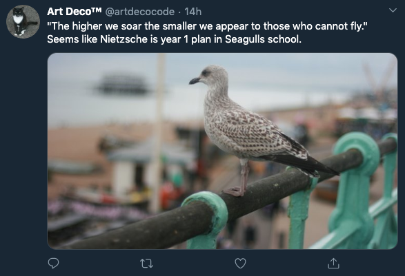
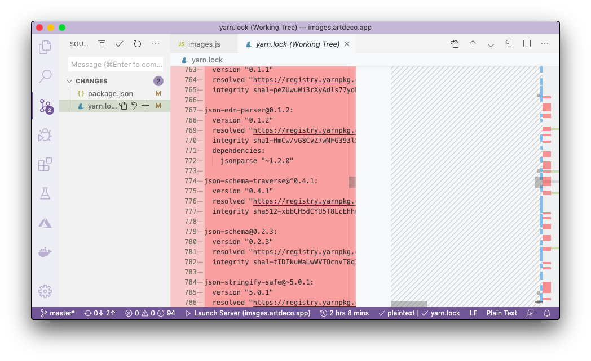

A person gave me 50 claps on Medium for a post on compiling Koa. What legend. The rest? I show them how to compile Node.JS packages, and people don't want to publish it on a newsletter... People's arrogance is pulsating through the screen. Light years ahead of everyone they can't even click the significance of this. But those claps made my day. I know my audience and they've made the right choice :)From Twitter moving on to work. It's painful to get back to doing programming on a project after a break as there's a bit of anxiety of how to start but I'm glad I was procrastinating on GitHub checking open issues, on `exif2css` so that got me back to the photo uploader. Started working on the `images.artdeco.app` which is a microservice that can receive images and resize them, without having to install sharp on each other app that needs such functionality. I thought I could update Docker image to Node 12, but it wasn't starting since JSX wasn't being parsed properly. I thought it was because of the `@depack/render` which didn't get updated but the transpilation happens in ÀLaMode and not rendering therefore I'm still not sure what happened. Upgraded `render` package though to provide ``api.xml`` to expose the method via API, which was used later now. Then _Depack_ also had to be updated, and static-analysis because of that Node 12 bug with `makePromise` that broke pretty much all code in so many packages, but I'm getting back on track. That's the downside of compilation as it's the same as fixing package version, so that you have to go back to each package and recompile it to statically link new code which wouldn't have been the case if it was a dependency with non-fixed version. Started using GitHub Actions which are really awesome: 7GB memory, Windows / Linux / Mac containers? Shut Up and don't take any of my money for 2000 free minutes per month. _Idio_ also then required fixing as frontend middleware dependent on the `resolve-package` which was broken because of `makepromise`. So I upgraded dependencies, and built it also. The actions could be good for building with Closure Compiler since they're so powerful, but I feel like I need control of my build step so that I can manually run `yarn lib/compile` and `yarn test-compile` to be able to fix issues. Or do I and it's just a bad habit that wastes a lot of time and could be avoided by working on a separate branch, and running a build step on master after a merge? nah. Also integrated the newly refreshed render for SSR rendering into _Idio_ itself and wrote some documentation for that. _Documentary_ needed an update to be able to use multiple parts from an example, e.g., ```js import dep from 'dep' /* start example */ import Code from 'code' /* end example */ (async () => { /* start example */ console.log(Code.sayHi()) /* start example */ })() ``` Also that required an update to stdlib which fixed the forks issue on Windows, because of the root path which I talked about in the previous entry. Didn't document this feature as I've stopped documenting documentary properly because there's this annoying bug with Wikis when forks do something silly and the whole documentation is generated twice which is extremely annoying but I can't figure it out. For dinner had [kale carrot](https://www.fabfood4all.co.uk/kale-soup/) soup with some chicken. Was ok. The soup was properly blended which is the first time I've do it like that. The rest of the day, spent working on the image uploader, in particular extracting only the needed bits from `azure-storage` package that are required to PUT blobs on storage. In the end, I had 2 files, an understanding of Azure's REST and its signing mechanism, and cut 390 lines from yarn.lock by removing their library which is 25% of the whole dependency dept. Super happy about it. The process consisted of debugging what their client is doing and taking bits of their code. I've kind of adapted it for my own style, as the `rqt` will add `Content-Type` header using capital letters but signing worked for `content-type` and same with `content-length` however it's not important on their servers, they just want the signature to be correct. The goal is to then write an article about the image uploader to start that content rolling on _Medium_ which is quite fun, and could be used to talk about _Idio_.

*TODO*